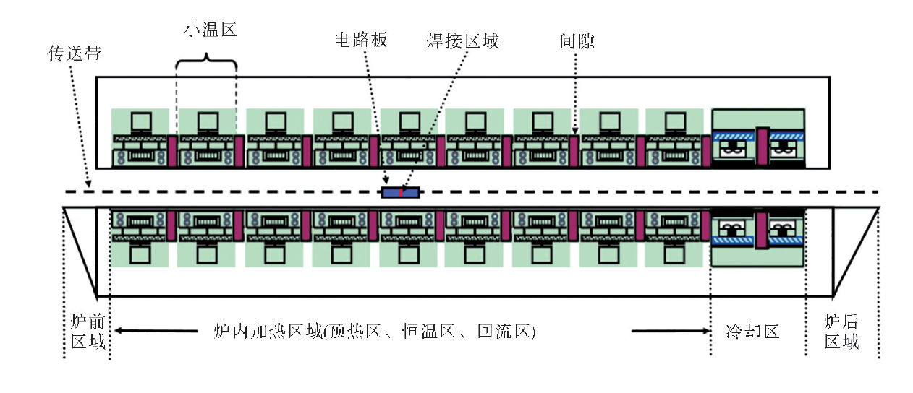
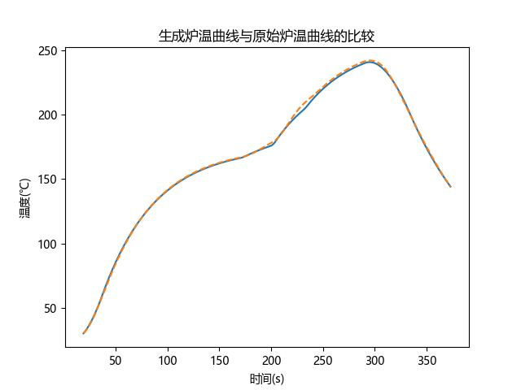
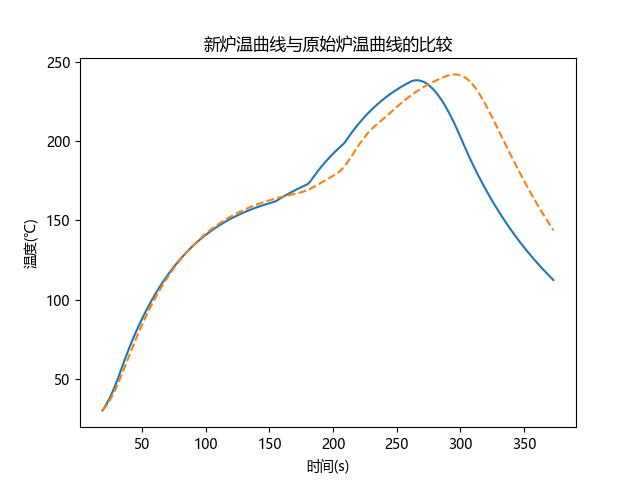
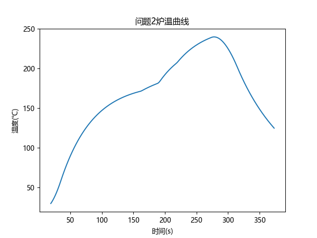

回焊炉内部设置若干个小温区,它们从功能上可分成４个大温区：预热区、恒温区、回流区和冷却区．电路板两侧搭在传送带上匀速进入炉内进行加热焊接．某回焊炉内有11个小温区及炉前区域和炉后区域（图１），每个小温区长度为 30.5cm，相邻小温区之间有 5cm 的间隙，炉前区域和炉后区域长度均为 25cm．

回焊炉启动后,炉内空气温度会在短时间内达到稳定，此后，回焊炉方可进行焊接工作．炉前区域、炉后区域以及小温区之间的间隙不做特殊的温度控制，其温度与相邻温区的温度有关，各温区边界附近的温度也可能受到相邻温区温度的影响．另外，生产车间的温度保持25℃．
问题1
由于题目的约束还有通过炉温曲线隐式给出的部分，因此首先要根据题目给出的实测数据确定所建立模型中的未知参数。再根据新的温度求得新的炉温曲线。
问题2
此小题引入新的变量——传送速度，新的约束——制程界限。传送速度的引入相当于对某一炉温曲线进行横向的拉伸。制程界限则是对拉伸后的曲线有斜率等限制。
问题3、4
这两个小题允许修改所有参数，仅保留制程界限的限制，提出高于217部分曲线应尽可能小和对称的优化目标。
相关情况见附件
本题基于电子设备生产过程中的重要工艺——回流焊技术命制。炉温曲线是该生产过程特性的综合体现，对生产能效，产品良率有重要影响。对炉温曲线进行优化分析意义重大。
使用计算机技术对回流焊焊接工艺进行仿真的方法得到了广泛的关注，此方法可以大大缩短工艺准备时间，降低实验费用，提高焊接质量，减小焊接缺陷。
通过使用PCBCAD数据的产品模型结构建立，回流焊工艺仿真模型，可以替代传统的在线参数的设置过程，甚至可以用来在生产前确保PCB设计与回流焊工艺的兼容性，指导可制造性设计(DFM)，该仿真模型也可以消除使用热电偶测试时无法稷盖全部产品区域的缺陷，PCB组件模型求解器和构建的回流焊炉模型，对于特定的工艺设置，可以较精确地预测PCB组件的回流焊温度曲线。使用该方法在PCB设计阶段来进行新产品的工艺优化，可以很简单地确保产品设计与工艺设备的相容性。
回流焊技术在电子制造领域并不陌生，我们电脑内使用的各种板卡上的元件都是通过这种工艺焊接到线路板上的，这种设备的内部有一个加热电路，将空气或氮气加热到足够高的温度后吹向已经贴好元件的线路板，让元件两侧的焊料融化后与主板粘结。这种工艺的优势是温度易于控制，焊接过程中还能避免氧化，制造成本也更容易控制。
本问题为基于物理情景的建模题，首先应选择合适的物理模型对情景进行解释。本题热传递的问题中有两种可选择的解决方案：一是将整个工件视作一个整体，不考虑其本身的温度分布，套用牛顿冷却定律来求得温度变化的情况；二是先利用傅里叶定律得出工件内部的温度分布，再在临界处使用牛顿冷却定律获得边值条件，反推工件中心的温度。在这里我们倾向于选择较简单的第一种物理模型，理由是工件在垂直运动方向（也就是传热方向）尺度较小，温度差异也相应地较小。
在选定物理模型后，此类问题就变得较为清晰了——温度场和前一个状态工件的温度作为输入的变量，利用牛顿冷却定律的差分形式进行反复迭代计算最后得出炉温曲线。
确定出速度和炉温曲线的关系后可解决问题二.
确定出小温区温度和炉温曲线间的关系后，将超过217部分曲线下方面积作为目标函数进行优化就可以进一步完成问题三.
问题4则需要自行设计目标函数，思路一是比较最高点两侧各位置的差商，计算差商之和进行最优化；思路二是比较两侧面积的大小。思路一更为严谨但计算量更大，可根据时间情况进行选择。
基于牛顿冷却定律的建模假设
由于工件体积、厚度较小，这里认为PCB板内部的温度会迅速达到一致且周围环境温度是统一的。
回焊炉的温度只在工件前进方向上变化，模型退化为一维问题。
遵循牛顿冷却定律。牛顿冷却定理中的系数在小温区温度差别不大时是相同的。
系统温度损失速度与系统和环境的温差成正比，即：
其中，分别为系统的温度，系统外界的温度和冷却系数.
给定数据为离散型，故将定律离散化，有：
也即
观察实验数据可知，该题中k值随时间变化，但在每个小温区内除温度发生变化外其他条件近似一致，故认为其分段接近常数，即k值在炉前区域、预热区（1-5小温区）、恒温区（6-7小温区）、回流区（8-9小温区）、冷却区（11-12小温区）以及炉后区域分别保持恒定.
在上述条件下，每段分别设法确定最优的冷却系数k。确定方法如下： 依据所给数据，每段预设定一个合理的k值，由牛顿冷却定律
以及每段相应初值迭代求得电路板在每段中的温度，再通过与题目实验数据比较以优化k值，直至与所提供数据近似一致.
加热区域设定温度(共4种)定义为，其调控范围为
传送带速度定义为，焊接区域中点的 “时间-温度” 定义为；
和的映射关系记为
制程条件记为条件，炉温曲线满足条件，即满足以下4个条件：
1. ;
2. , 其中,分别是第一次使得和成立的时刻;
3. , 其中,是方程的两个根;
4.
曲线簇
对于问题二，数学模型为
其中，，求解时直接以小步长遍历即可得最大速度．
对于问题三，设时刻炉温曲线中焊接点温度取得最大值，则题目所述覆盖面积应表示为
覆盖面积最优的炉温曲线为
为求该面积，首先应试图在制程条件下以某种方式求出炉温曲线的解析解，但这涉及到偏微分方程的求解，并且是分段的，导致解析解的求解非常困难．因此，考虑以某种方式遍历所有的温度与速度的设置，计算并挑选出满足的最优曲线．遍历实际上是对温度与速度设置空间的一种采样算法，当然均匀采样会是首选，但这会使得采样点的个数随着空间的维数指数增长．本问题需要遍历五个维度的数据，因此均匀采样过于依赖初值的设定，难以遍历至最优解，需要更优的采样方法．
下面给出一种通过“混沌迭代”进行“混沌采样”的办法，实现近似的遍历：
由上述步骤可以生成一种种温度速度设置的“混沌采样”结果，也即条炉温曲线，从而大大缩短遍历时间．
基于混沌采样法，可以对问题三进行求解，然而仍需考虑值的设定．越大，计算结果约接近最优值，但计算量会随之增大．对于值的设定，可以考虑如下选择标准：
1. 给定, 计算出最优曲线对应的面积；
2. 令, 计算出最优曲线对应的面积, 并计算和的相对误差；
3. 若相对误差小于, 则认为 2 ) 中面积为, 对应的曲线即为最优曲线；
4. 若相对误差大于, 则令, 然后重复 1、2直至3成立．
至此问题三可以得到解决，问题四同样是最优曲线的求解问题，仍然可以采用混沌采样法遍历，但问题四增设一个新的指标以衡量其对称性，定义“镜像对称误差”：. 其中范数可以为任意类型．
问题四还要考虑问题三的面积问题，因此是双目标函数的规划问题，考虑到面积与镜像误差的量纲不同，将两个指标归一化后进行加和，再求其最值．因此问题4可以转化成求解以下规划问题：
其中：
重复问题三的采样方法并计算指标，可以得到最优曲线．
| k1 | k2 | k3 | k4 | k5 | |
|---|---|---|---|---|---|
| 区域 | 预热区 | 恒温区 | 回流区 | 冷却区 | 炉后区域 |
| 近似值 | 0.0194 | 0.0142 | 0.0213 | 0.0211 | 0.0168 |
| 平均误差 | 0.395 | 0.210 | 1.600 | 0.352 | 0.543 |
csv文件在附件中。
问题2：
编程计算得到该条件下的最大速度为1.2384
问题3和问题4：
使用混沌采样法取得20000个温度速度序列，遍历求最优情况。
面积最小的5组取值如下：
| 速度 | T1 | T2 | T3 | T4 | S | P | |
|---|---|---|---|---|---|---|---|
| 1 | 1.534 | 183.220 | 188.426 | 240.976 | 264.568 | 441.682 | 0.029 |
| 2 | 1.496 | 182.552 | 196.173 | 230.438 | 264.890 | 442.515 | 0.037 |
| 3 | 1.565 | 183.560 | 194.076 | 244.267 | 264.840 | 443.399 | 0.033 |
| 4 | 1.438 | 170.124 | 188.222 | 233.416 | 264.943 | 443.724 | 0.026 |
| 5 | 1.593 | 183.391 | 200.717 | 244.813 | 264.838 | 443.791 | 0.046 |
综合指标最小的5组取值如下：
| 速度 | T1 | T2 | T3 | T4 | S | P | |
|---|---|---|---|---|---|---|---|
| 1 | 1.451 | 178.135 | 194.288 | 226.253 | 264.966 | 446.440 | 0.005 |
| 2 | 1.466 | 180.332 | 200.759 | 225.040 | 264.974 | 445.251 | 0.009 |
| 3 | 1.511 | 178.364 | 185.838 | 241.398 | 264.946 | 446.956 | 0.011 |
| 4 | 1.421 | 171.960 | 195.922 | 225.294 | 264.984 | 445.837 | 0.012 |
| 5 | 1.383 | 167.254 | 186.257 | 230.513 | 264.065 | 447.003 | 0.019 |

问题一中生成炉温曲线与原始炉温曲线的比较，可见所求k值较为准确地描述了回焊炉中不同位置的差异情况。
随后用题目所给的数据生成新的炉温曲线如下：


[1]沈继红 蔡志杰 李晓乐.数学建模及其应用Mathematical Modeling and Its Applications第10卷 第1期 炉温曲线的数学模型及求解 2021.3.
[2]宋巍.基于加热机理分析的回流焊过程仿真建模与有限元分析[D].东北大学，2012.
[3]洪健，许志辉.基于有限元理论的回流焊工艺仿真研究[C].2018.
[4]全国大学生数学建模竞赛组织委员会.2020全国大学生数学建模竞赛论文展示（A070).http://dxs.moe.gov.cn/zx/a/hd_sxjm_sxjmlw_2020qgdxssxjmjslwzs/201103/1609388.shtml